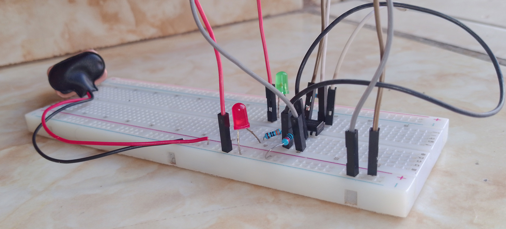
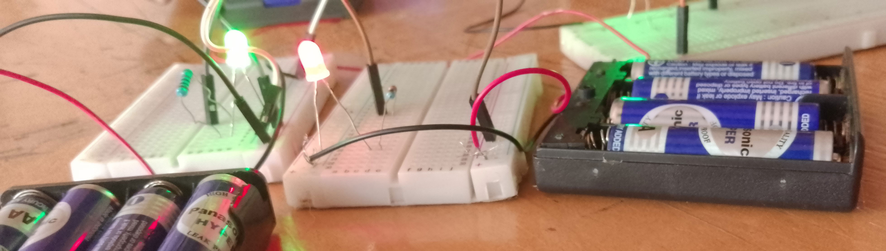

Robotics & sensors
Smart Irrigation
Explore how a sensor can help a system respond to its surroundings.
Learning through making
At RLH, learners explore ideas by building, coding, testing and improving practical projects. Browse examples of the kinds of work and learning activities featured across our existing programs.
These images use existing RLH media and can be replaced with updated project photos.
Project gallery
Use the arrow buttons, keyboard, trackpad or touch to move through the gallery. The carousel pauses while you interact.
Explore how a sensor can help a system respond to its surroundings.

Practise sequencing, timing and simple control logic with an electronics model.

Build digital confidence through page structure, styling and interactive ideas.

Explore how lighting, sensing and control can work together in a prototype.

Explore how sensing and motor control can help a robot respond to obstacles.

Use digital design tools to explore shapes, measurement and engineering ideas.

Practise connecting components and understanding how a circuit behaves.

Connect simple inputs and outputs to explore responsive systems.

Try an idea, test what happens and make improvements to the build.

Collaborative activities introduce learners to practical technology skills.
Ten project examples. Use the buttons or scroll horizontally to explore.
Learning pathways
RLH pathways include Robotics and Electronics, AI and Coding, Web Development, and 3D Design and Engineering. Each pathway is planned for 10+ sessions, with one session per week.
Get started
Talk with RLH about Home STEM Coaching or a suitable learning pathway.